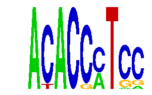

family_3 |
|---|
|  |
| Download PWM |
| Download instances (motifs) |
| Show motif distribution |
Query_ID | Query_Consensus | Subject_Name | Source_DB | Subject_ID | Length | Orientation | Offset | Divergence | Overlap | Subject_Consensus |
|---|
Sequence | Start_position (from start) | Start_position (from end) | Average conservation | Best conservation score | Instance_with_best_CS | Best_Z-score | Instance_with_best_ZS | Strand |
|---|---|---|---|---|---|---|---|---|
| chr4:134842576-134843576 | 480 | 489 | 0.0111111 | 0.043 | ACACCMTCM | 16.843723 | ACACCMTCM | 1 |
| chr5:31208244-31209244 | 859 | 868 | 1 | 1 | ACACCMTCM | 12.8627615 | ACACCMTSC | 1 |
| chr6:124869568-124870568 | 163 | 172 | 0.999889 | 1 | ACACCMTSC | 12.8627615 | ACACCMTSC | 1 |
| chr4:134730734-134731734 | 624 | 633 | 0.992 | 1 | ACACCMTCS | 20.895731 | ACACCMTCS | 1 |
| chr11:120101153-120102153 | 115 | 124 | 0.00211111 | 0.01 | ACACCMTCS | 20.895731 | ACACCMTCS | -1 |
| chr10:79537530-79538530 | 29 | 38 | 0.00244444 | 0.016 | ACACCMTSC | 16.843723 | ACACCMTCM | 1 |
| chr18:61123056-61124056 | 549 | 558 | 0.999778 | 1 | ACACCMTCS | 20.895731 | ACACCMTCS | -1 |
| chr4:129472154-129473154 | 640 | 649 | 0.994778 | 0.999 | ACACCMTSC | 12.8627615 | ACACCMTSC | 1 |
| chr16:38362422-38363422 | 625 | 634 | 0.127667 | 0.412 | AYACCMTCC | 18.593367 | AYACCMTCC | 1 |
| chr7:51729362-51730362 | 1016 | 1025 | 0.000666667 | 0.002 | ACACCMTCS | 16.843723 | ACACCMTMC | 1 |
| chr4:115745363-115746363 | 831 | 840 | 0.00144444 | 0.003 | ACACCMTSC | 12.8627615 | ACACCMTSC | 1 |
| chr3:10207108-10208904 | 1210 | 1219 | 0.00244444 | 0.008 | AYACCMTCC | 16.843723 | ACACCMTMC | 1 |
| chr14:104864768-104865768 | 169 | 178 | 0.548 | 1 | ACACSMTCC | 16.843723 | ACACCMTMC | 1 |
| chr6:86437151-86438151 | 459 | 468 | 0.0472222 | 0.051 | ACACCMTCM | 12.8627615 | ACACCMTSC | 1 |
| chr1:72229227-72230227 | 814 | 823 | 0.00444444 | 0.022 | ACACCMTSC | 16.843723 | ACACCMTCM | 1 |
| chr6:3956194-3957194 | 122 | 131 | 0.0222222 | 0.033 | ACACCMTMC | 16.843723 | ACACCMTMC | 1 |
| chr7:4460996-4461996 | 933 | 942 | 0.977889 | 1 | ACACSMTCC | 18.593367 | ACACSMTCC | 1 |
| chr13:13530453-13531453 | 311 | 320 | 0.0493333 | 0.179 | ACACCMTCM | 16.843723 | ACACCMTCM | -1 |
| chr13:47199334-47200334 | 700 | 709 | 0.0178889 | 0.093 | ACACSMTCC | 18.593367 | ACACSMTCC | 1 |
| chr7:134170729-134171729 | 684 | 693 | 0.00177778 | 0.003 | ACACCMTSC | 12.8627615 | ACACCMTSC | 1 |
| chr1:174173759-174174759 | 570 | 579 | 0.00166667 | 0.014 | AYACCMTCC | 18.593367 | AYACCMTCC | 1 |
| chr7:4466899-4467899 | 766 | 775 | 0.000111111 | 0.001 | ACACCMTCM | 12.8627615 | ACACCMTSC | 1 |